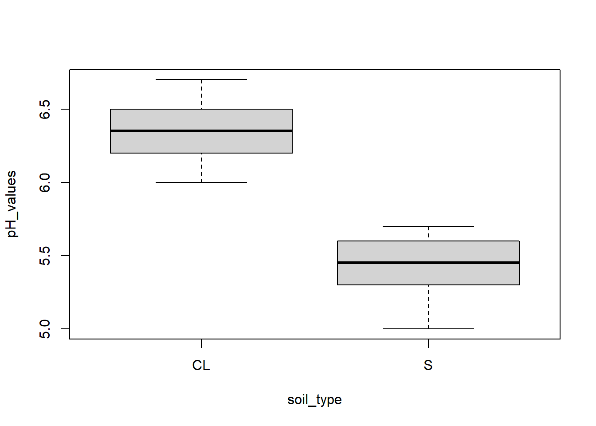

pH_values <- c(5.6, 5.5, 5.0, 5.7, 5.4, 5.3, 6.0, 6.7, 6.5, 6.4, 6.2, 6.3)3 Data Structures
A data structure in R is an R object which holds one or more data objects, a data object will be a data type, such as we have encountered in section 1 (numeric, character, etc). In this script we introduce vectors, factors, matrices, data frames and lists. The examples and exercises should help you to understandbetter how R holds and manages data.
Vectors
A vector is a series of values of a variable (e.g. pH value measurements from a sensor). The easiest way to form a vector of values in R is with the "combine" function c(). An example of a vector of numeric values (pH readings) is shown below:
We can count the number of items in a vector with the length() function:
length(pH_values)[1] 12Each item in a vector can be referenced by its index (i.e. its position in the sequence of values), and we can pull out a particular item using the square brackets after the vector name. For example, the 7th item in pH_values can be accessed like this
pH_values[7][1] 6A vector is a “homogeneous” data structure. You could make a vector of logical values or of numeric values or of character values, but not a vector which has a mixture.
See what happens if you try:
mixture <- c(5.2, TRUE, "CA")
print(mixture)[1] "5.2" "TRUE" "CA" everything is turned into a character, and so appears in quotation marks. You could not perform arithmetic on the first object in the vector, as you can see if you try:
sqrt(mixture[1])The operations that we have applied above to scalar data types can be applied to vectors. So, for example, see what happens with the R command
print(2*pH_values) [1] 11.2 11.0 10.0 11.4 10.8 10.6 12.0 13.4 13.0 12.8 12.4 12.6the operation is applied to every element in the vector, and the output is a vector.
There are other functions that we can apply to vectors for example
mean_pH <- mean(pH_values)
print(mean_pH)[1] 5.883333A conditional operation applied to a vector will produce a vector of logical values
pH_le_6 <- pH_values <= 6.0
print(pH_le_6) [1] TRUE TRUE TRUE TRUE TRUE TRUE TRUE FALSE FALSE FALSE FALSE FALSEThe which() function, applied to a vector, will extract the index values for all values in the vector which meet certain conditions, e.g.:
index_lt_6 <- which(pH_values<6)
print(index_lt_6)[1] 1 2 3 4 5 6we can use this vector of index values to extract the pH values which meet the condition into a new vector:
small_pH_values <- pH_values[index_lt_6]
print(small_pH_values)[1] 5.6 5.5 5.0 5.7 5.4 5.3If we use the multiplication operation on two vectors, a and b, which are the same length…
a<-c(1,2,3,4,5)
b<-c(1,10,100,1000,10000)
c<-a*b
print(c)[1] 1 20 300 4000 50000… then the output, c, is a vector of the same length as a or b, where c[i]= a[i]*b[i]. If a and b were of different length you would get an error message.
There are various useful commands for creating vectors, rep() is one of the best.A assume that our pH values are drawn from six soil samples which are sands (S) and six which are clay loam (CL). We can make a vector of character values which corresponds to the pH data with the following command:
soil_type <- rep(c("S","CL"),each=6)
print(soil_type) [1] "S" "S" "S" "S" "S" "S" "CL" "CL" "CL" "CL" "CL" "CL"and you could then extract the index of the clay loams:
clay_loam_index <- which(soil_type=="CL")… and then extract the pH values for the clay loam soils
pH_clay_loam <- pH_values[clay_loam_index]Factors
In the previous section we introduced the idea of vectors of character variables as treatment labels. However, in order to be most useful, such a vector needs to be turned into a factor. A factor is a variable which is not a continuous number, or is not treated as one. It is a label for some variable controlled at different levels in an experiment, so a factor might be Nitrogen (application rate) with levels 0, 50 and 100 kg/ha, or it might be Variety with levels AB_123, AB_234, CD_120, CD_130. When we first set up a vector of N rates these could be numeric, the Varieties will be made character variables because they contain letters. In both cases, however, we are likely to want the variable to be turned into a factor for use in an analysis of variance, for example.The example below sets up two vectors with levels for these factors in an experiment with the two factors in factorial combination (giving 12 treatments) and with four replicates of each treatment in randomized blocks
Nitrogen <- rep(c(0,50,100),16)
Variety <- rep(c("AB_123", "AB_234", "CD_120", "CD_130"),each=3,times=4)
Blocks <- rep(c("Block_1","Block_2","Block_3","Block_4"),each=12)The cbind command below will print out these vectors as columns in a matrix of character values it is easy to see how the twelve combinations of the two factor levels are structured in each block
cbind(Blocks,Variety,Nitrogen) Blocks Variety Nitrogen
[1,] "Block_1" "AB_123" "0"
[2,] "Block_1" "AB_123" "50"
[3,] "Block_1" "AB_123" "100"
[4,] "Block_1" "AB_234" "0"
[5,] "Block_1" "AB_234" "50"
[6,] "Block_1" "AB_234" "100"
[7,] "Block_1" "CD_120" "0"
[8,] "Block_1" "CD_120" "50"
[9,] "Block_1" "CD_120" "100"
[10,] "Block_1" "CD_130" "0"
[11,] "Block_1" "CD_130" "50"
[12,] "Block_1" "CD_130" "100"
[13,] "Block_2" "AB_123" "0"
[14,] "Block_2" "AB_123" "50"
[15,] "Block_2" "AB_123" "100"
[16,] "Block_2" "AB_234" "0"
[17,] "Block_2" "AB_234" "50"
[18,] "Block_2" "AB_234" "100"
[19,] "Block_2" "CD_120" "0"
[20,] "Block_2" "CD_120" "50"
[21,] "Block_2" "CD_120" "100"
[22,] "Block_2" "CD_130" "0"
[23,] "Block_2" "CD_130" "50"
[24,] "Block_2" "CD_130" "100"
[25,] "Block_3" "AB_123" "0"
[26,] "Block_3" "AB_123" "50"
[27,] "Block_3" "AB_123" "100"
[28,] "Block_3" "AB_234" "0"
[29,] "Block_3" "AB_234" "50"
[30,] "Block_3" "AB_234" "100"
[31,] "Block_3" "CD_120" "0"
[32,] "Block_3" "CD_120" "50"
[33,] "Block_3" "CD_120" "100"
[34,] "Block_3" "CD_130" "0"
[35,] "Block_3" "CD_130" "50"
[36,] "Block_3" "CD_130" "100"
[37,] "Block_4" "AB_123" "0"
[38,] "Block_4" "AB_123" "50"
[39,] "Block_4" "AB_123" "100"
[40,] "Block_4" "AB_234" "0"
[41,] "Block_4" "AB_234" "50"
[42,] "Block_4" "AB_234" "100"
[43,] "Block_4" "CD_120" "0"
[44,] "Block_4" "CD_120" "50"
[45,] "Block_4" "CD_120" "100"
[46,] "Block_4" "CD_130" "0"
[47,] "Block_4" "CD_130" "50"
[48,] "Block_4" "CD_130" "100" Now use the factor() function to create factor data structures.
Nitrogen_factor<-factor(Nitrogen)
print(Nitrogen_factor)
Variety_factor<-factor(Variety)
print(Variety_factor)
Block_factor<-factor(Blocks)
print(Block_factor)Note that a factor is actually a vector, but with an associated list of levels, always presented in alpha-numeric order. These are used by R functions such as lm() which does linear modelling, such as the analysis of variance. We shall see how factors can be used in the later section on data frames.
Matrices
A matrix is a rectangular array of values, arranged in rows and columns. A vector is therefore a type of matrix with just one column. We can create a matrix in R in one of two main ways. The first is the matrix command:
M1 <- matrix(1:6,3,2)
print(M1) [,1] [,2]
[1,] 1 4
[2,] 2 5
[3,] 3 6The first term in the command is a vector of numbers, 1 to 6, the second is the number rows in the matrix and the third is the number of columns. Note that we always refer to an entry in the matrix by the ROW first and the COLUMN second. As an exercise, look at the effect of swapping 3 and 2 round in the command above. Note also that the command enters the terms down the first column then down the second, so that the first column of M1 goes 1,2,3 and the second 4, 5, 6.
The second way to make a matrix in R is to "bind" some vectors together, which works only if they are the same length. If we start with 2 vectors:
a <- c(2,4,5)
b <- c(4,7,10).. then we can make a 3 x 2 matrix (remember that means 3 rows and 2 columns) with the cbind() command (for binding the vectors as columns of the matrix):
M2 <- cbind(a,b)
print(M2) a b
[1,] 2 4
[2,] 4 7
[3,] 5 10… and we could make a 2 x 3 matrix with the rbind() command (for binding the vectors as rows of the matrix):
M3 <- rbind(a,b)
print(M3) [,1] [,2] [,3]
a 2 4 5
b 4 7 10Note that the vector names become column or row names of the matrix. You can look at these names with the colnames or rownames command, and also use these to change the names:
colnames(M2)[1] "a" "b"colnames(M2) <- c("Column_1","Column_2")
colnames(M2)[1] "Column_1" "Column_2"We can refer to a particular cell of a matrix as follows
M2[2,2]Column_2
7 .. and we can refer to a particular column of the matrix as follows
M2[,2][1] 4 7 10For example, to find the sum of the first column of M2 ..
Sum_Col_1 <- sum(M2[,1])
print(Sum_Col_1)[1] 11Data frames
A matrix or a vector is a “homogeneous” data structure, which means you can’t mix data types. Consider the previous example, we have a vector of numeric data on soil pH:
pH_values<-c(5.6, 5.5, 5.0, 5.7, 5.4, 5.3, 6.0, 6.7, 6.5, 6.4, 6.2, 6.3)… and a corresponding vector of character values on the soil texture class for each sample
soil_type<-rep(c("S","CL"),each=6).. and then attempt to put the character and the numeric vector into a matrix:
combined_data<-cbind(soil_type,pH_values)
# print the outcome..
print(combined_data) soil_type pH_values
[1,] "S" "5.6"
[2,] "S" "5.5"
[3,] "S" "5"
[4,] "S" "5.7"
[5,] "S" "5.4"
[6,] "S" "5.3"
[7,] "CL" "6"
[8,] "CL" "6.7"
[9,] "CL" "6.5"
[10,] "CL" "6.4"
[11,] "CL" "6.2"
[12,] "CL" "6.3" We can can see that the pH values are now character, a string "5.6" which could not be used in calculations.
Let us see what happens if we convert soil type to a factor first..
soil_type <- factor(soil_type)
combined_data <- cbind(soil_type,pH_values)
#print the outcome..
print(combined_data) soil_type pH_values
[1,] 2 5.6
[2,] 2 5.5
[3,] 2 5.0
[4,] 2 5.7
[5,] 2 5.4
[6,] 2 5.3
[7,] 1 6.0
[8,] 1 6.7
[9,] 1 6.5
[10,] 1 6.4
[11,] 1 6.2
[12,] 1 6.3… the factor values have been converted to numeric ones (label 1 goes to the factor whose original name came first in alphabetical order (“CL”).
This is why matrices, while important for many applications, are not the most basic data structure in R. The data frame serves this purpose, which is why we will generally use commands such as read.table or read.csv to read data from external files into an R data frame
We can turn our two vectors into a data frame as follows:
combined.df <- data.frame(
soil_type=soil_type,
pH_values=pH_values,
stringsAsFactors = TRUE
)The option "stringsAsFactors = TRUE" tells R that soil_type should be treated as a factor.
We can reference the data object inside the data frame using the dollar notation, combined.df$soil_type so we can confirm that soil_type is indeed a factor in the data frame as follows.
print(combined.df$soil_type) [1] S S S S S S CL CL CL CL CL CL
Levels: CL SWe now have a data frame in which the soil_type variable is a factor and the pH_values are numeric: just what we need.
print(combined.df) soil_type pH_values
1 S 5.6
2 S 5.5
3 S 5.0
4 S 5.7
5 S 5.4
6 S 5.3
7 CL 6.0
8 CL 6.7
9 CL 6.5
10 CL 6.4
11 CL 6.2
12 CL 6.3This allows us to do some interesting things. For example, make a boxplot of pH within each level of the factor
boxplot(pH_values~soil_type,data=combined.df)
… or to extract the mean value of pH for each level of the factor
by(combined.df$pH_values,combined.df$soil_type,mean)combined.df$soil_type: CL
[1] 6.35
------------------------------------------------------------
combined.df$soil_type: S
[1] 5.416667… or to do a t-test to compare the mean pH values
t.test(pH_values~soil_type,data=combined.df)
Welch Two Sample t-test
data: pH_values by soil_type
t = 6.5814, df = 9.9951, p-value = 6.236e-05
alternative hypothesis: true difference in means between group CL and group S is not equal to 0
95 percent confidence interval:
0.6173319 1.2493348
sample estimates:
mean in group CL mean in group S
6.350000 5.416667 Three useful R commands, which can be applied to data frames and are particularly useful when examining one created by reading in data are names(), head() and nrow(). Apply these to combined.df in order to work out what they do.
names(combined.df)[1] "soil_type" "pH_values"head(combined.df) soil_type pH_values
1 S 5.6
2 S 5.5
3 S 5.0
4 S 5.7
5 S 5.4
6 S 5.3nrow(combined.df)[1] 12The colnames() command can be used either to show or to set the column names (as for matrices)
colnames(combined.df)[1] "soil_type" "pH_values"Lists
A list in R is a vector of data objects. It can be a useful structure for holding outputs from analyses in a consistent format, and you might find that some packages you use produce lists as outputs.
In this example we take three vectors of values and put them together in a list:
list_example <- list("some_numbers"=c(1,2,3,4),
"some_odd_numbers"=c(1,3,5,7),
"some_even_numbers"=c(2,4,6,8))
print(list_example)$some_numbers
[1] 1 2 3 4
$some_odd_numbers
[1] 1 3 5 7
$some_even_numbers
[1] 2 4 6 8The three components of the list are referred to as list “slices” You can use the name of a slice and the dollar notation to refer to a particular slice
list_example$some_even_numbers[1] 2 4 6 8and because a slice is a vector you can refer to a single element of it by its index (order in the vector) and the square brackets notation:
list_example$some_even_numbers[3][1] 6Alternatively, you can refer to slices of a list by using the double square bracket with an index (for the first, second… slice). For example, an alternative way to reference the vector "some_even_numbers", which is the third slice, is as follows
list_example[[3]][1] 2 4 6 8.. and you can refer to an element of this vector thus
list_example[[3]][4][1] 8For example, one may change the value of the fourth element in the third slice as follows
list_example[[3]][4]<-10